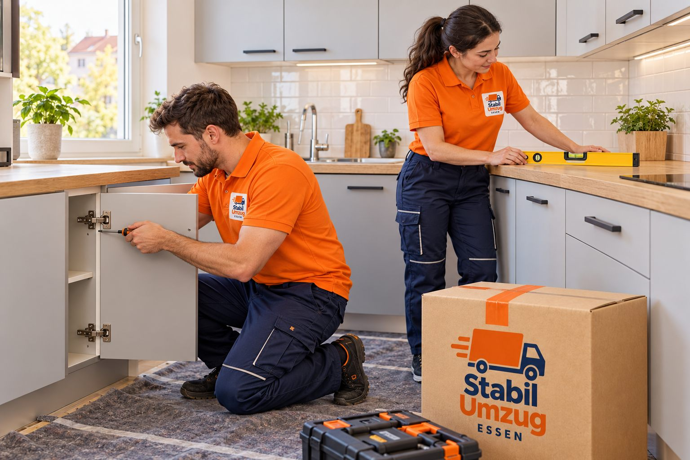

Zusatzleistungen rund um Ihren Umzug in Essen
Möbelmontage, Packservice, Kartons, Halteverbotszone oder Klaviertransport: Mit unseren Zusatzleistungen stellen Sie Ihren Umzug in Essen so zusammen, wie Sie ihn brauchen.

Was wir für Sie übernehmen.
Möbelmontage, Packservice, Kartons, Halteverbotszone, Klaviertransport und mehr.
Möbelabbau und Möbelaufbau
Wir bauen Schränke, Betten und andere Möbel ab und in der neuen Wohnung wieder auf.
Tragehilfe
Sie brauchen nur kräftige Hände? Wir tragen schwere oder sperrige Gegenstände für Sie.
Umzugshilfe beim Ein- und Ausladen
Wenn Sie selbst einen Transporter fahren, übernehmen wir das Be- und Entladen.
Entsorgung von Sperrmüll nach Vereinbarung
Alte Möbel und Sperrmüll nehmen wir nach Absprache mit und entsorgen sie nach den örtlichen Vorschriften.
Ein- und Auspackservice
Wir verpacken Ihren Hausrat sicher in Kartons und packen ihn am Ziel auf Wunsch wieder aus.
Umzugskartons und Verpackungsmaterial
Wir stellen Ihnen Kartons und Verpackungsmaterial für einen geordneten Umzug bereit.
Halteverbotszone nach Vereinbarung
Damit der Umzugswagen nah am Haus parken kann, kümmern wir uns nach Absprache um die Halteverbotszone.
Klaviertransport
Klaviere transportieren wir mit dem passenden Material und ausreichend Personal.
In vier Schritten erledigt.
- 01
Anfrage
Sie sagen uns per Formular, Telefon oder WhatsApp, welche Leistungen Sie benötigen.
- 02
Angebot
Wir klären Umfang und Termin und senden Ihnen ein persönliches Angebot.
- 03
Einsatz
Unser Team erledigt die vereinbarten Leistungen am vereinbarten Tag.
- 04
Abschluss
Wir gehen das Ergebnis mit Ihnen durch und klären offene Punkte direkt vor Ort.
Typischerweise enthalten
5
- Frei kombinierbare Leistungen, einzeln oder zusammen mit einem Umzug
- Werkzeug für Möbelabbau und Möbelaufbau
- Kartons und Verpackungsmaterial nach Vereinbarung
- Beantragung der Halteverbotszone nach Vereinbarung
- Sperrmüllentsorgung nach Vereinbarung
Kurz beantwortet.
Kann ich Zusatzleistungen auch ohne kompletten Umzug buchen?
Ja. Möbelmontage, Tragehilfe oder Ein- und Ausladen können Sie auch einzeln buchen.
Brauche ich eine Halteverbotszone?
Wenn vor dem Haus wenig Platz ist, erleichtert sie den Umzug deutlich. Mehr dazu in unserem Ratgeber zur Halteverbotszone.
Transportieren Sie auch Klaviere?
Ja. Für ein Angebot brauchen wir Art des Instruments, Stockwerke und Zugang an beiden Adressen.
Wie bekomme ich ein kostenloses Angebot?
Nutzen Sie unser kurzes Angebotsformular oder rufen Sie uns an bzw. schreiben Sie per WhatsApp an 0163 9688190.
Gut vorbereitet.
Möbelmontage
Wie lange Ab- und Aufbau ungefähr dauern und wie Sie Schrauben und Beschläge vorbereiten.
LesenKartons und Packen
Kartontypen und Größen, die Regel schwer-klein und leicht-groß, Packliste und Zeitplan.
LesenHalteverbotszone
Damit der Umzugswagen nah an der Haustür halten kann: wo beantragen, wie früh.
LesenKostenlos anfragen. Antwort in 24 Std.
Umzug, Entrümpelung, Wohnungsauflösung oder Transport: Wir senden Ihr persönliches, unverbindliches Angebot innerhalb von 24 Stunden – per WhatsApp oder E-Mail.